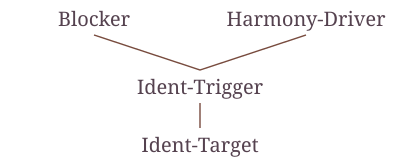

Research
Vowel harmony, Optimality Theory, and the structure of phonological analyses.
Current research
Transparency and blocking in Tuyuca nasal harmony
In my postdoctoral research, I investigate whether the ranking architecture I identified for dominance reversal can also account for the contrast between transparency and blocking in nasal harmony systems of South America languages(Tuyuca, Guaraní), and what such a correspondence would establish about phonological locality.
This comparison forms part of a broader investigation into how phonological analyses can be characterized across differences in their constraints, representations, and empirical coverage. Within Optimality Theory, I develop criteria for comparing analyses through the ranking relations they instantiate. Alongside the postdoctoral project, I continue to examine the relationship between broad [+ATR] harmony and restricted [−ATR] alternations, the empirical problem that first motivated this approach.
Dissertation
On the Architecture of Dominance Reversal
My dissertation investigates dominance reversal in ATR vowel harmony: systems in which broadly dominant [+ATR] harmony coexists with restricted contexts where underlyingly [+ATR] vowels surface as [−ATR]. It argues that these effects can be characterized through a shared ranking architecture in Optimality Theory, identified through factorial typology and examined across Komo, Kinande, Liko, Turkana, and Ateso. This approach makes it possible to compare analyses through the relations among their constraints, while accounting for differences in how reversal surfaces and interacts with other patterns.

Publications
-
Votic vowel harmony in substance-free logical phonology
Leduc, M., Reiss, C., & Volenec, V. (2024). In H. van der Hulst & N. A. Ritter (Eds.), The Oxford Handbook of Vowel Harmony, 425–436. Oxford University Press.
Publisher -
Locality is epiphenomenal: Adjacency is opaqueness
Dabbous, R., Leduc, M., Reiss, C., & Shen, D. T.-C. (2025). Proceedings of the 2024 Annual Conference of the Canadian Linguistic Association.
Full text -
Use it or lose it harmony in Komo
Leduc, M., & McCollum, A. (2023). Proceedings of the 2022 Annual Meeting on Phonology.
Full text -
Icy targets in Karajá ATR harmony as contrast preservation
Ozburn, A., & Leduc, M. (2022). Supplemental Proceedings of the 2021 Annual Meeting on Phonology.
Full text